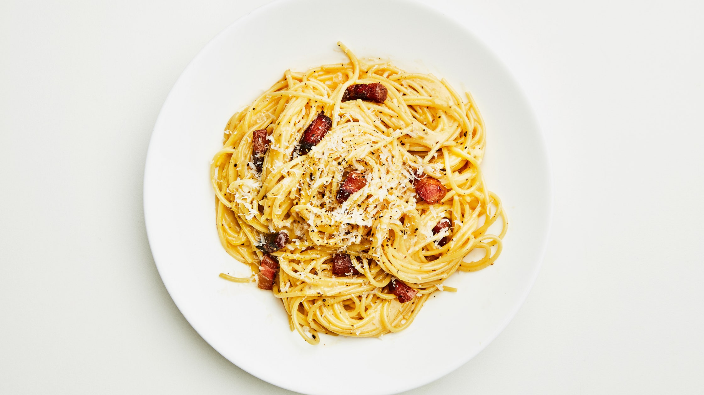

Simple Carbonara

Description
Pasta Carbonara is one of the simplest and most delicious pasta
recipes out there, but its simplicity also means there is great
debate as to what exactly constitutes Carbonara.
Traditionally, Carbonara is made without garlic and that is how this recipe does it
as well. However, many people (even some Italians) do include garlic
in their Carbonara and, frankly, it is perhaps even better with.
But for our purposes we will be focusing on the traditional way
to make Carbonara, which is also the simplest. Quick and easy,
but no less delicious.
Ingredients
- 3 tbsp. salt
- 100 g guanciale, pancetta or, simply, bacon
- 50 g parmesan
- 4 large egg yolks
- 2 large eggs
- Black pepper, freshly ground
- 2 tbsp. extra virgin olive oil
- 500 g spaghetti, bucatini or rigatoni
Steps
- Heat a pot of water for the pasta. Add salt when the water starts to steam and cover with a lid.
- While waiting for the water to boil, cut meat into small strips and grate cheese.
- Whisk egg yolks and whole eggs in a bowl, then add in three-quarters of cheese plus some pepper.
- Heat 2 tbsp. olive oil in another pot over medium heat.
- Add meat and cook until crisp for about 7-10 minutes.
- Remove pot from heat and transfer meat to a bowl. Pour fat into a cup and re-add 3 tbsp. fat to pot.
- Cook pasta in boiling water. Just before pasta is finished, scoop out 4 dl pasta water.
- Add 2 dl pasta water to pot with fat, drain pasta and add pasta to the same pot.
- Cook pasta, stirring constantly, until al dente for about 2 minutes. Remove pot from heat.
- Whisk 1 dl pasta water into egg mixture, then slowly pour mixture into the pot until cheese is melted.
- Thin sauce with remaining pasta water and season with salt.
- Add meat and you're done!